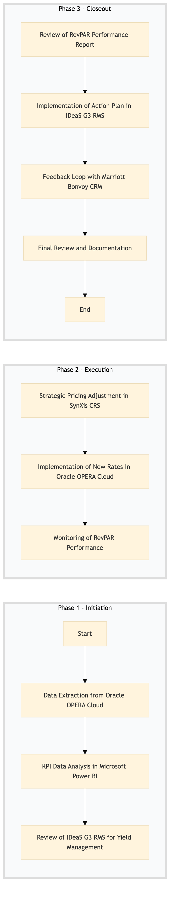

| Role | Steps |
|---|---|
| Revenue Manager | 1.1 1.3 2.1 3.1 3.4 |
| Revenue Analyst | 1.2 2.2 2.3 3.2 |
| Customer Service Manager | 3.3 |
| Step | Name | Role | System | Input | Output | KPI | Dec? | Exc? | Pain Point / Risk |
|---|---|---|---|---|---|---|---|---|---|
| 1.1 | Data Extraction from Oracle OPERA Cloud | Revenue Manager | Oracle OPERA Cloud | Operational data | Extracted data report | Completion within 2 hours | N | Y | Data extraction delays due to system overload |
| 1.2 | KPI Data Analysis in Microsoft Power BI | Revenue Analyst | Microsoft Power BI | Extracted data report | KPI analysis dashboard | Analysis completed within 4 hours | N | Y | Inaccurate data leading to flawed insights |
| 1.3 | Review of IDeaS G3 RMS for Yield Management | Revenue Manager | IDeaS G3 RMS | KPI analysis dashboard | Yield management report | Report generated within 1 hour | N | Y | System downtime affecting yield data |
| 2.1 | Strategic Pricing Adjustment in SynXis CRS | Revenue Manager | SynXis CRS | Yield management report | Pricing strategy document | Adjustments made within 24 hours | N | Y | Manual errors in pricing adjustments |
| 2.2 | Implementation of New Rates in Oracle OPERA Cloud | Revenue Analyst | Oracle OPERA Cloud | Pricing strategy document | Rates updated in PMS | Updates completed within 1 hour | N | Y | System integration issues causing delays |
| 2.3 | Monitoring of RevPAR Performance | Revenue Manager | Oracle OPERA Cloud, Microsoft Power BI | Rates updated in PMS | RevPAR performance report | Monitoring conducted daily | Y | N | Real-time data access challenges |
| 3.1 | Review of RevPAR Performance Report | Revenue Manager | Microsoft Power BI | RevPAR performance report | Action plan document | Review completed within 2 hours | Y | N | Interpreting complex data trends |
| 3.2 | Implementation of Action Plan in IDeaS G3 RMS | Revenue Analyst | IDeaS G3 RMS | Action plan document | Updated yield management strategy | Plan implementation within 1 day | N | Y | Resistance to change in pricing strategies |
| 3.3 | Feedback Loop with Marriott Bonvoy CRM | Revenue Manager | Marriott Bonvoy CRM | Updated yield management strategy | Customer feedback report | Feedback collected within 1 week | Y | N | Low response rates from customers |
| 3.4 | Final Review and Documentation | Revenue Manager | Microsoft Power BI, Oracle OPERA Cloud | Customer feedback report | Complete RevPAR & KPI performance review document | Review completed within 24 hours | N | Y | Documentation errors leading to miscommunication |
This process involves a detailed review of Revenue Per Available Room (RevPAR) and Key Performance Indicators (KPIs) at a full-service Marriott hotel. It aims to optimize revenue management strategies using Oracle OPERA Cloud PMS and other integrated systems.